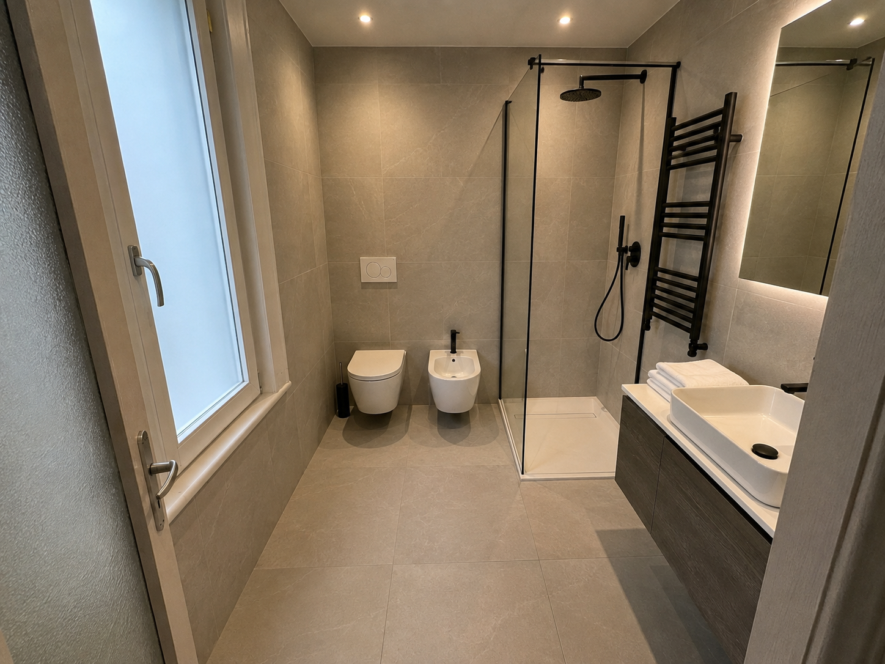
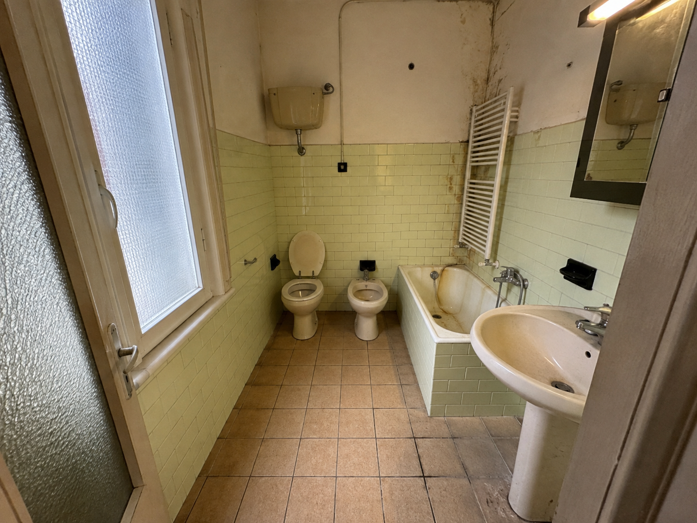

Perfetti e puntuali in ogni lavoro.
Impresa edile a Prato dal 1986
(scorri lentamente per continuare)
Il risultato
Guarda con il cursore come potrebbe essere il tuo risultato!


Prima DopoUsa le frecce della tastiera o trascina il cursore arancione.
Non devi coordinare idraulico, piastrellista e muratore separatamente. Parli con una persona sola, dal sopralluogo alla consegna.
Le fasi del cantiere e i tempi indicativi sono nel preventivo, prima che tu decida di partire.
Non una cifra detta al telefono: un documento da confrontare con altri preventivi, con i tempi che ti servono.
Chi viene a misurare il bagno è la stessa persona che poi coordina i lavori, non un commerciale che gira il contatto ad altri.
Come lavoriamo
Sei fasi, sempre nello stesso ordine. I tempi variano in base alle dimensioni del bagno e allo stato degli impianti esistenti: li quantifichiamo sul tuo cantiere durante il sopralluogo.
Rimozione di sanitari, piastrelle e massetto esistenti.
Indicativo 1–2 giorniNuove tubazioni, scarichi, punti luce e prese a norma.
Indicativo 2–3 giorniPreparazione del piano di posa e protezione dall'acqua.
Indicativo 1–2 giorni + asciugaturaPavimento e rivestimento.
Indicativo 3–4 giorniInstallazione di sanitari, piatto doccia o vasca, rubinetteria.
Indicativo 1–2 giorniStuccature, silicone, pulizia finale e sopralluogo di consegna.
Indicativo 1 giornoRecensioni vere, lasciate su Google da chi ha già lavorato con noi.
Prezzi e cosa comprende
Ogni bagno è diverso: la fascia sotto è indicativa. L'importo definito arriva con il preventivo scritto, dopo il sopralluogo sul tuo cantiere.
Indicativamente da 5.000 € a 15.000 €
Demolizione, impianti, massetto, posa piastrelle, sanitari e finiture.
Compreso nel preventivo
Non compreso / da valutare
Sopralluogo gratuito
Lascia i tuoi contatti: ti richiamiamo per fissare il sopralluogo e mandarti il preventivo scritto entro 48 ore.
Preferisci chiamare direttamente? 0574 202295 (ufficio) — 347 9053103 (cellulare)
Prima di decidere
Puoi venirci a trovare qui.
Domande frequenti
Prima di fissare il sopralluogo, le risposte alle domande più comuni.
Sì. Il sopralluogo e il preventivo scritto non hanno costi, anche se poi non decidi di procedere con noi.
Il preventivo scritto arriva entro 48 ore dal sopralluogo.
Le nostre squadre dirette, le stesse che vedi al sopralluogo. Non passiamo il cantiere a imprese terze.
Indicativamente [DA INSERIRE: durata complessiva stimata, es. X–Y giorni lavorativi] per una ristrutturazione completa. Il tempo esatto per il tuo bagno lo definiamo al sopralluogo.
Il referente resta lo stesso: te lo segnaliamo, ti spieghiamo cosa serve e il preventivo si aggiorna prima di procedere, non dopo.
Sì, a Prato e provincia e nell'area di Firenze.